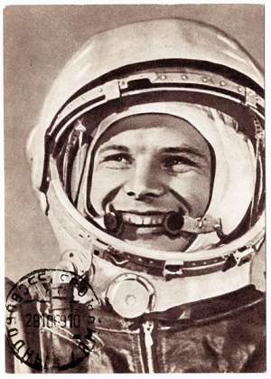
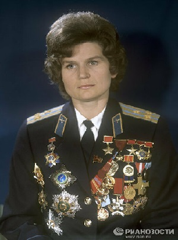
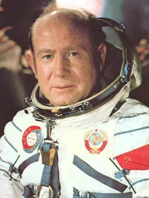
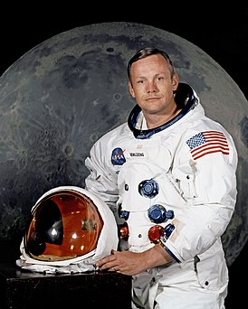
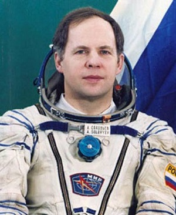
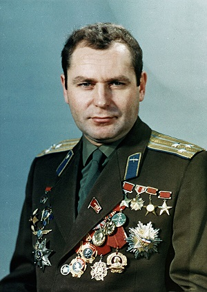
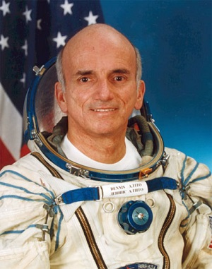

Космонавты Фото Имя Годы жизни Достижения  Гагарин Юрий Алексеевич 9 марта 1934 – 27 марта 1968 гг. Совершил огромный шаг для человечества 12 апреля 1961 года, когда достиг космоса и провел один виток вокруг Земли. Его полет продлился 108 минут. Гагарин был удостоен звания Герой Советского Союза. Кроме того, его наградили «Волгой» с номерами 12-04 ЮАГ — это дата совершенного полета и инициалы первого космонавта.  Терешкова Валентина Владимировна 6 марта 1937 г. В русскоязычном обществе вторым известнейшим космонавтом является первая женщина-космонавт – Валентина Терешкова. Валентина воплотила в жизнь мечту каждого советского ребенка. 16-го июня 1963-го года первая женщина-космонавт и 10-й космонавт в мире, Валентина Терешкова, достигла космоса на борту корабля «Восток-6» и облетела нашу планету 48 раз.  Леонов Алексей Архипович 30 мая 1934 г.- 11 октября 2019 г. Алексей Леонов – первый космонавт, который 18 марта 1965 года оказался в открытом космосе в одном скафандре. Было исследовано воздействие космической среды на организм человека, а также были определены различные технические недостатки корабля и скафандра. Результаты исследований позволили дальнейшим экспедициям в космос использовать более продвинутое оборудования для более широкого исследования космоса.  Нил Армстронг 5 августа 1930 – 25 августа 2012 гг. Американский астронавт стал первым человеком ступившем на поверхность Луны. Однако, очевидно, что успех всей миссии зависел не только от ловкости и опыта военно-морского летчика и участника боевых действий, но также от команды, и от трудов всех людей, сделавших вклад в технологическое развитие человечества. Сей факт отразили слова Нила, во время его первого шага на Луне: «Это маленький шаг для одного человека и огромнейший шаг для всего человечества».  Соловьев Анатолий Яковлевич 16 января 1948 Прославился Анатолий Яковлевич суммарным количеством пребывания в открытом космосе. За пять космических полетов, космонавт Соловьев совершил 16 выходов в безвоздушное пространство, общая длительность которых составила и 78 часов 48 минут.  Титов Герман Степанович 11 сентября 1935 – 20 сентября 2000 гг. Советский космонавт Герман Титов известен тем, что на момент его первого полета 1961-го года ему было 25 лет. Помимо этого, второй космонавт в мире впервые провел длительный космический полет – более суток.  Деннис Тито 8 августа 1940 Являясь главным управляющим Wilshire Associates – инвестиционной фирмы, Деннис решил оплатить собственный полет в космос, так как с детства увлекался космонавтикой и имеет образование в данной области. В 2001-м году 60-летний предприниматель осуществил свою мечту, стартовав в космос с Байконура на борту «Союз ТМ-32».